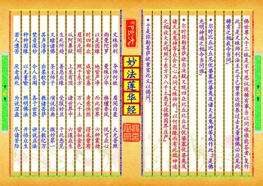

-
第【1-2】页▎⚫〔序品第一〕▼如是我闻。一时、佛住王舍城、耆阇崛山中，与大比丘众万二千人俱。皆是阿罗汉，诸漏已尽，无复烦恼，逮得己利，尽诸有结，心得自在。其名曰，阿若憍陈如、摩诃迦叶、优楼频螺迦叶、伽耶迦叶、那提迦叶、舍利弗、大目犍连、摩诃迦旃延、阿冕楼驮、劫宾那、憍梵波提、离婆多、毕陵伽婆蹉、薄拘罗、摩诃拘絺罗、难陀、孙陀罗难陀、富楼那弥多罗尼子、须菩提、阿难、罗侯罗，如是众所知识、大阿罗汉等。▼复有学、无学二千人。摩诃波阇波提比丘尼，与眷属六千人俱。罗侯罗母耶输陀罗比丘尼，亦与眷属俱。菩萨摩诃萨八万人，皆于阿耨多罗三藐三菩提不退转，皆得陀罗尼。乐说辩才，转不退转法轮。供养无量百千诸佛，于诸佛所、植众德本，常为诸佛之所称叹。以慈修身，善入佛慧。通达大智，到于彼岸。名称普闻无量世界，能度无数百千众生。其名曰，文殊师利菩萨、观世音菩萨、得大势菩萨、常精进菩萨、不休息菩萨、宝掌菩萨、药王菩萨、勇施菩萨、宝月菩萨、月光菩萨、满月菩萨、大力菩萨、无量力菩萨、越三界菩萨、跋陀婆罗菩萨、弥勒菩萨、宝积菩萨、导师菩萨，如是等菩萨摩诃萨八万人俱。▼尔时释提桓因，与其眷属二万天子俱。复有名月天子、普香天子、宝光天子、四大天王，与其眷属万天子俱。自在天子、大自在天子，与其眷属三万天子俱。娑婆世界主、梵天王、尸弃大梵、光明大梵等，与其眷属万二千天子俱。有八龙王、难陀龙王、跋难陀龙王、娑伽罗龙王、和修吉龙王、德叉迦龙王、阿那婆达多龙王、摩那斯龙王、优钵罗龙王等，各与若干百千眷属俱。有四紧那罗王、法紧那罗王、妙法紧那罗王、大法紧预览书籍 全文配置
-
第【3-4】页那罗王、持法紧那罗王，各与若干百千眷属俱。有四乾闼婆王、乐乾闼婆王、乐音乾闼婆王、美乾闼婆王、美音乾闼婆王，各与若干百千眷属俱。有四阿修罗王、婆稚阿修罗王、佉罗骞驮阿修罗王、毗摩质多罗阿修罗王、罗侯阿修罗王，各与若干百千眷属俱。有四迦楼罗王、大威德迦楼罗王、大身迦楼罗王、大满迦楼罗王、如意迦楼罗王，各与若干百千眷属俱。韦提希子阿阇世王，与若干百千眷属俱。各礼佛足，退坐一面。▼尔时世尊，四众围绕，供养、恭敬、尊重、赞叹。为诸菩萨说大乘经，名无量义，教菩萨法，佛所护念。佛说此经已，结跏趺坐，入于无量义处三昧，身心不动。是时天雨曼陀罗华，摩诃曼陀罗华，曼殊沙华，摩诃曼殊沙华，而散佛上、及诸大众。普佛世界，六种震动。▼尔时会中，比丘、比丘尼、优婆塞、优婆夷、天龙、夜叉、乾闼婆、阿修罗、迦楼罗、紧那罗、摩侯罗伽、人非人，及诸小王、转轮圣王。是诸大众，得未曾有，欢喜合掌，一心观佛。▼尔时佛放眉间白毫相光，照东方万八千世界，靡不周遍，下至阿鼻地狱，上至阿迦尼吒天。于此世界，尽见彼土六趣众生，又见彼土现在诸佛。及闻诸佛所说经法。并见彼诸比丘、比丘尼、优婆塞、优婆夷、诸修行得道者。复见诸菩萨摩诃萨、种种因缘、种种信解、种种相貌、行菩萨道。复见诸佛般涅盘者。复见诸佛般涅盘后，以佛舍利、起七宝塔。▼尔时弥勒菩萨作是念，‘今者、世尊现神变相，以何因缘而有此瑞。今预览书籍 全文配置
-
第【5-6】页 佛世尊入于三昧，是不可思议、现稀有事，当以问谁，谁能答者。’复作此念，‘是文殊师利、法王之子，已曾亲近供养过去无量诸佛，必应见此稀有之相，我今当问。’▼尔时比丘、比丘尼、优婆塞、优婆夷、及诸天龙、鬼神等，咸作此念，‘是佛光明神通之相，今当问谁？’▼尔时弥勒菩萨，欲自决疑，又观四众比丘、比丘尼、优婆塞、优婆夷、及诸天龙、鬼神、等，众会之心，而问文殊师利言，‘以何因缘、而有此瑞、神通之相，放大光明，照于东方万八千土，悉见彼佛国界庄严？’▼于是弥勒菩萨欲重宣此义，以偈问曰，文殊师利▁导师何故▁眉间白毫▁大光普照雨曼陀罗▁曼殊沙华▁栴檀香风▁悦可众心以是因缘▁地皆严净▁而此世界▁六种震动时四部众▁咸皆欢喜▁身意快然▁得未曾有眉间光明▁照于东方▁万八千土▁皆如金色从阿鼻狱▁上至有顶▁诸世界中▁六道众生生死所趋▁善恶业缘▁受报好丑▁于此悉见又睹诸佛▁圣主师子▁演说经典▁微妙第一其声清净▁出柔软音▁教诸菩萨▁无数亿万梵音深妙▁令人乐闻▁各于世界▁讲说正法种种因缘▁以无量喻▁照明佛法▁开悟众生若人遭苦▁厌老病死▁为说涅盘▁尽诸苦际预览书籍 全文配置
-
第【7-8】页若人有福▁曾供养佛▁志求胜法▁为说缘觉若有佛子▁修种种行▁求无上慧▁为说净道文殊师利▁我住于此▁见闻若斯▁及千亿事如是众多▁今当略说▁我见彼土▁恒沙菩萨种种因缘▁而求佛道▁或有行施▁金银珊瑚真珠摩尼▁砗磲玛瑙▁金刚诸珍▁奴婢车乘宝饰辇舆▁欢喜布施▁回向佛道▁愿得是乘三界第一▁诸佛所叹▁或有菩萨▁驷马宝车栏楯华盖▁轩饰布施▁复见菩萨▁身肉手足及妻子施▁求无上道▁又见菩萨▁头目身体欣乐施与▁求佛智慧▁文殊师利▁我见诸王往诣佛所▁问无上道▁便舍乐土▁宫殿臣妾剃除须发▁而被法服▁或见菩萨▁而作比丘独处闲静▁乐诵经典▁又见菩萨▁勇猛精进入于深山▁思惟佛道▁又见离欲▁常处空闲深修禅定▁得五神通▁又见菩萨▁安禅合掌以千万偈▁赞诸法王▁复见菩萨▁智深志固能问诸佛▁闻悉受持▁又见佛子▁定慧具足以无量喻▁为众讲法▁欣乐说法▁化诸菩萨破魔兵众▁而击法鼓▁又见菩萨▁寂然宴默天龙恭敬▁不以为喜▁又见菩萨▁处林放光济地狱苦▁令入佛道▁又见佛子▁未尝睡眠经行林中▁勤求佛道▁又见具戒▁威仪无缺净如宝珠▁以求佛道▁又见佛子▁住忍辱力预览书籍 全文配置
-
第【9-10】页增上慢人▁恶骂捶打▁皆悉能忍▁以求佛道又见菩萨▁离诸戏笑▁及痴眷属▁亲近智者一心除乱▁摄念山林▁亿千万岁▁以求佛道或见菩萨▁肴膳饮食▁百种汤药▁施佛及僧名衣上服▁价值千万▁或无价衣▁施佛及僧千万亿种▁栴檀宝舍▁众妙卧具▁施佛及僧清净园林▁华果茂盛▁流泉浴池▁施佛及僧如是等施▁种果微妙▁欢喜无厌▁求无上道或有菩萨▁说寂灭法▁种种教诏▁无数众生或见菩萨▁观诸法性▁无有二相▁犹如虚空又见佛子▁心无所著▁以此妙慧▁求无上道文殊师利▁又有菩萨▁佛灭度后▁供养舍利又见佛子▁造诸塔庙▁无数恒沙▁严饰国界宝塔高妙▁五千由旬▁纵广正等▁二千由旬一一塔庙▁各千幢幡▁珠交露幔▁宝铃和鸣诸天龙神▁人及非人▁香华伎乐▁常以供养文殊师利▁诸佛子等▁为供舍利▁严饰塔庙国界自然▁殊特妙好▁如天树王▁其华开敷佛放一光▁我及众会▁见此国界▁种种殊妙诸佛神力▁智慧稀有▁放一净光▁照无量国我等见此▁得未曾有▁佛子文殊▁愿决众疑四众欣仰▁瞻仁及我▁世尊何故▁放斯光明佛子时答▁决疑令喜▁何所饶益▁演斯光明佛坐道场▁所得妙法▁为欲说此▁为当授记预览书籍 全文配置
-
第【11-12】页示诸佛土▁众宝严净▁及见诸佛▁此非小缘文殊当知▁四众龙神▁瞻察仁者▁为说何等▼尔时文殊师利语弥勒菩萨摩诃萨、及诸大士，善男子等，‘如我惟忖，今佛世尊欲说大法，雨大法雨，吹大法螺，击大法鼓，演大法义。诸善男子，我于过去诸佛，曾见此瑞，放斯光已，即说大法。是故当知今佛现光，亦复如是，欲令众生，咸得闻知一切世间难信之法，故现斯瑞。，‘▼‘诸善男子，如过去无量无边不可思议阿僧只劫，尔时有佛，号日月灯明如来、应供、正遍知、明行足、善逝世间解、无上士、调御丈夫、天人师、佛、世尊，演说正法，初善、中善、后善，其义深远，其语巧妙，纯一无杂，具足清白梵行之相。为求声闻者、说应四谛法，度生老病死，究竟涅盘。为求辟支佛者、说应十二因缘法。为诸菩萨、说应六波罗蜜，令得阿耨多罗三藐三菩提，成一切种智。’▼‘次复有佛、亦名日月灯明，次复有佛、亦名日月灯明，如是二万佛、皆同一字，号日月灯明，又同一姓，姓颇罗堕。弥勒当知，初佛后佛，皆同一字，名日月灯明，十号具足。所可说法，初中后善。其最后佛，未出家时、有八王子，一名有意，二名善意，三名无量意，四名宝意，五名增意，六名除疑意，七名向意，八名法意。是八王子，威德自在，各领四天下。是诸王子，闻父出家，得阿耨多罗三藐三菩提。悉舍王位，亦随出家，发大乘意，常修梵行，皆为法师，已于千万佛所、植诸善本。’▼‘是时日月灯明佛说大乘经，名无量义、教菩萨法、佛所护念。说是经预览书籍 全文配置
-
第【13-14】页已，即于大众中、结跏趺坐，入于无量义处三昧，身心不动。是时、天雨曼陀罗华，摩诃曼陀罗华，曼殊沙华，摩诃曼殊沙华，而散佛上、及诸大众。普佛世界，六种震动。尔时会中，比丘、比丘尼、优婆塞、优婆夷、天龙、夜叉、乾闼婆、阿修罗、迦楼罗、紧那罗、摩侯罗伽、人非人、及诸小王、转轮圣王、等。是诸大众，得未曾有，欢喜合掌，一心观佛。’▼‘尔时如来放眉间白毫相光，照东方万八千佛土，靡不周遍，如今所见、是诸佛土。弥勒当知，尔时会中，有二十亿菩萨、乐欲听法。是诸菩萨，见此光明、普照佛土，得未曾有，欲知此光所为因缘。时有菩萨，名曰妙光，有八百弟子。是时日月灯明佛从三昧起，因妙光菩萨、说大乘经，名妙法莲华、教菩萨法、佛所护念。六十小劫、不起于座。时会听者、亦坐一处，六十小劫、身心不动，听佛所说，谓如食顷。是时众中，无有一人、若身若心而生懈倦。’▼‘日月灯明佛于六十小劫说是经已，即于梵、魔、沙门、婆罗门、及天、人、阿修罗、众中，而宣此言，如来于今日中夜，当入无余涅盘。时有菩萨，名曰德藏，日月灯明佛即授其记。告诸比丘，“是德藏菩萨，次当作佛，号曰净身，多陀阿伽度、阿罗诃、三藐三佛陀。”佛授记已，便于中夜、入无余涅盘。佛灭度后，妙光菩萨持妙法莲华经，满八十小劫、为人演说。日月灯明佛八子、皆师妙光。妙光教化，令其坚固阿耨多罗三藐三菩提。是诸王子、供养无量百千万亿佛已，皆成佛道，其最后成佛者，名曰燃灯。八百弟子中，有一人、号曰求名，贪著利养，虽复读诵众经，而不通利，多所忘失，故号求名。是人亦以种诸善根因缘故，得值无量百千万亿诸佛，供养、恭敬，尊重、赞叹。’预览书籍 全文配置
-
第【15-16】页▼‘弥勒当知，尔时妙光菩萨、岂异人乎，我身是也，求名菩萨，汝身是也。今见此瑞、与本无异，是故惟忖，今日如来当说大乘经，名妙法莲华、教菩萨法、佛所护念。’▼尔时文殊师利于大众中，欲重宣此义，而说偈言，我念过去世▁无量无数劫▁有佛人中尊▁号日月灯明世尊演说法▁度无量众生▁无数亿菩萨▁令入佛智慧佛未出家时▁所生八王子▁见大圣出家▁亦随修梵行时佛说大乘▁经名无量义▁于诸大众中▁而为广分别佛说此经已▁即于法座上▁跏趺坐三昧▁名无量义处天雨曼陀华▁天鼓自然鸣▁诸天龙鬼神▁供养人中尊一切诸佛土▁即时大震动▁佛放眉间光▁现诸稀有事此光照东方▁万八千佛土▁示一切众生▁生死业报处有见诸佛土▁以众宝庄严▁琉璃玻璃色▁斯由佛光照及见诸天人▁龙神夜叉众▁乾闼紧那罗▁各供养其佛又见诸如来▁自然成佛道▁身色如金山▁端严甚微妙如净琉璃中▁内现真金像▁世尊在大众▁敷演深法义一一诸佛土▁声闻众无数▁因佛光所照▁悉见彼大众或有诸比丘▁在于山林中▁精进持净戒▁犹如护明珠又见诸菩萨▁行施忍辱等▁其数如恒沙▁斯由佛光照又见诸菩萨▁深入诸禅定▁身心寂不动▁以求无上道又见诸菩萨▁知法寂灭相▁各于其国土▁说法求佛道尔时四部众▁见日月灯佛▁现大神通力▁其心皆欢喜预览书籍 全文配置